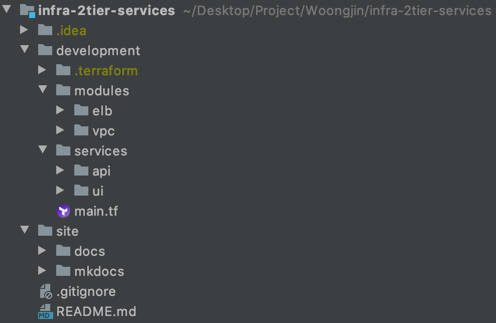

infra-2tier-services Directory
infra-2tier-services의 디렉토리 구조입니다.

1. modules
elb와vpc가 구현되어 있습니다.
elb와 vpc는 기존 infra-2tier-base에 기구축된 리소스를 참조합니다.
2. services
api와ui로 구성되어 있습니다.
각 서비스에서만 사용되는 리소스들로 이루어져 있습니다.
3. site
3.1 docs
infra-2tier-services
명세 및 아키텍쳐와 관련된 문서가 포함되어 있습니다.
3.2 mkdocs
매뉴얼 가이드폴더입니다.
mkdocs 마크다운 방식으로 글쓰기를 하며,mkdocs serve라는 명령어를 통해서 실시간으로 매뉴얼 내역을 확인할 수 있습니다. (mkdocs.org 참고)